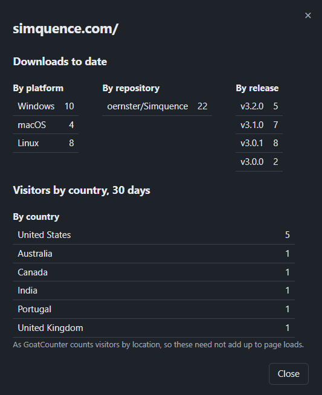
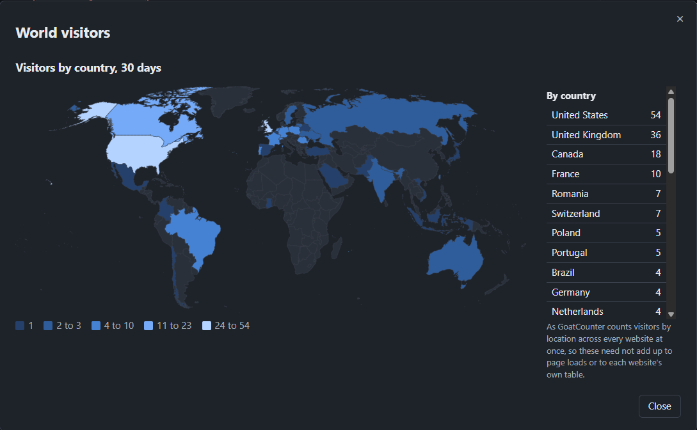

What Visitron does
One list of your websites; for the one you pick, the detail behind its numbers. Each part is below.
Every website in one list
Each row is one website with its page loads and its downloads for the period you chose, plus how much each rose since the check before. Pick 7 days, 30 days, 90 days or a year; it remembers your choice.
- Statistics per website. The button at the right of each row (or Enter on the list) opens its downloads by repository, by release (newest first, each named by its version) and by platform, with its visitors by country over the period beside them, as GoatCounter counts them. The headings stay put while the rows scroll.
- Charts per day. Page loads per day and downloads per day, oldest on the left and today on the right, against a count axis you can read at a glance.
- It says when. The window states when the last successful check finished.

Where your visitors come from
World visitors, in the bar, puts every website's visitors together on a map of the world over the period you chose. Watch new countries appear as the weeks go by.
- Shaded by how many came. The deeper the shade, the more visitors; the steps rise on a logarithmic scale, so a country with a handful still stands out beside one with hundreds. The key under the map gives the counts each shade covers.
- The figures beside it. A table lists every country, largest first; point at a country on the map to read its own.
- Counted once across every site. GoatCounter counts them over all your websites at once, so the totals need not add up to each website's own table.
- Nothing fetched to draw it. The map's shapes come inside Visitron, so drawing it asks no map service for anything.

It finds your repositories for you
Type a website's address and Visitron reads the site: the page you gave plus the pages it links to under the same address, up to fifty of them. Every GitHub repository those pages name is listed with a tick box.
- The likely ones come ticked. When only one repository is found it is ticked for you; so is one whose name matches the site's.
- Add one by hand. Type it as owner/name; it is added once GitHub confirms it exists.
- A site that cannot be read can still be saved, with its repositories typed in.
- Several sites on one domain. A website at example.com/app/ counts its own pages; example.com counts the rest, so nothing is counted twice.
Figures you can believe
A number is only useful when you know what it counts. Visitron says.
- Your own disk image downloads can be left out. If you download each release's macOS .dmg yourself, to confirm notarisation say, set how many times in Settings. Visitron takes that many off every .dmg file across the whole history. It is 0 until you set it.
- Page loads are visitors per page per day. That is the figure GoatCounter reports; one person reading a page twice in a day counts once.
- No negative days. If GitHub's count for a file falls, because a release was deleted or a file uploaded again, that day records no rise rather than a loss.
- A failed check keeps the figures you had. Visitron says what failed and when, puts a warning sign on Refresh until a check succeeds and tries again half an hour later.
- It waits out GitHub's limit. If GitHub says too many requests, Visitron keeps what it has, states when GitHub will answer again and carries on after that.
Settings that explain themselves
Settings is grouped by what each part feeds: page loads, downloads, checking and counting, then Visitron itself. Under each key is what it is for and numbered steps to get one.
- Keys stay with your system. Your GoatCounter key and GitHub token are kept in Windows Credential Manager, the macOS Keychain or the Linux keyring, never in a file or the log; each goes only to its own service.
- Tried as you save. Save a key and Visitron tries it once, then tells you whether it works.
- Hidden until you ask. A stored key is masked until you press its eye button.
Out of the way in the tray
On Windows. The macOS and Linux versions have no tray: closing the window quits them.
- Close asks first. Closing the window asks whether to minimise to the tray or quit, opening on the safe answer.
- A small tray menu. Open, Refresh now and Quit.
- Starts with Windows, its window hidden, so it checks from sign-in. On from the first install; setup or Settings turns it off.
- One copy at a time. Start it again and the running copy simply shows its window.
- Every control from the keyboard. Tab and the arrow keys move between controls; Enter or Space presses one; Escape closes a dialog. Up and Down walk the list of websites.
- Dark or light. It opens dark; one press of the button in the bar changes it, remembered from then on.
- A Guide built in. The Help menu holds a guide that walks you through setting up GoatCounter and names every button.